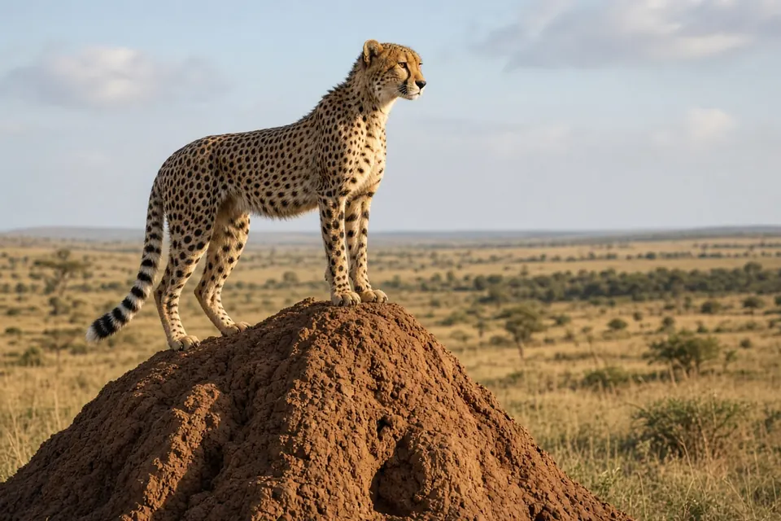

Home › Blog › Why do cheetahs have black tear marks?
Why do cheetahs have black tear marks?
The black lines that run from the inner corner of each cheetah eye down to the mouth are often called tear marks (or malar stripes). Zoos and the Cheetah Conservation Fund describe them as a way to cut sun glare so a daytime hunter can keep its eyes on prey. That glare idea is a widely repeated hypothesis, not a result that has been proven in a controlled experiment, and the Smithsonian National Zoo itself phrases it carefully as something the marks may do.
What are cheetah tear marks?
On every wild cheetah, a dark stripe of fur runs from the inner corner of each eye along the side of the muzzle to the mouth. San Diego Zoo Wildlife Alliance notes that cheetahs are the only cats with these black facial marks, which it also calls malar stripes. Together with solid round body spots (not rosettes) and a small, rounded head, the marks are one of the fastest ways to separate a cheetah from a leopard or jaguar.
The marks are part of the coat pattern, not wounds or staining. They show on adults and cubs, and they are present on both sides of the face.
What do the sources say they are for?
The leading explanation is glare reduction. Smithsonian's National Zoo and Conservation Biology Institute writes that the dark tear marks beneath each eye may aid hunting by minimising the sun's glare, and that they may also help with intimidation. The Cheetah Conservation Fund's fact materials put the same idea in everyday terms: the marks reduce sun glare so cheetahs can see clearly over long distances, comparing the effect to the black grease athletes put under their eyes.
That framing matches how cheetahs hunt. Unlike lions, leopards and hyenas, which are often most active at night or in low light, cheetahs hunt mainly by day on open plains and grassland. Daytime hunting helps them avoid larger competitors, but it also means they often track prey under bright sky. CCF Canada's eyesight explainer links the tear marks to that daytime niche: other large African cats mainly hunt when the sun is not a problem, while cheetahs need clear vision in glare.
Important: glare reduction is what these organisations propose. We have not found a peer reviewed experiment that measures how much the marks change retinal glare or hunting success. Treat it as a plausible, widely cited hypothesis, not as a settled laboratory fact.

How tear marks fit the rest of cheetah vision
Tear marks sit alongside other daytime hunting adaptations. The Smithsonian cheetah page notes elongated retinal foveas that give a sharp, wide angle view, and a flat face that places the eyes for strong binocular vision. CCF Canada adds that cheetah retinas have more cone cells (better for daylight colour and detail) and fewer rod cells than other cats, and that a horizontal streak of photoreceptors helps them scan the horizon of open habitats. High set eyes and a reported field of view around 210 degrees help a cheetah watch a herd from a mound before the sprint starts.
None of those traits prove the tear marks work as anti glare paint. They do show why a daytime sprinter would benefit from any feature that keeps the eyes working in bright light. For how the sprint itself works, see how fast is a cheetah? and how cheetahs hunt.
Check another spotted cat
Tear marks plus solid spots almost always mean cheetah. Empty rosettes usually mean leopard; dotted rosettes and a heavy head usually mean jaguar.
Why other big cats lack them
Lions, tigers, leopards, jaguars and snow leopards do not wear matching eye to mouth tear stripes. That fits their hunting styles: most rely more on night or twilight activity, cover and ambush than on long, sunlit chases across open ground. A leopard's face has small spots; a jaguar's head is broad and heavy; neither shows the cheetah's continuous dark stripe from eye to mouth. Spot pattern and face shape remain the practical field marks even when lighting is poor.
Key takeaways
- Cheetah tear marks (malar stripes) run from each eye to the mouth and are unique among cats.
- Zoos and the Cheetah Conservation Fund present glare reduction for daytime hunting as the main function.
- Smithsonian phrases the glare role as something the marks may do; it is a hypothesis, not a measured proof.
- Combined with solid spots and a slim build, tear marks are a reliable ID cue against leopards and jaguars.
More species context on our cheetah facts page and the behavior hub.
Frequently asked questions
Do tear marks reduce glare?
That is the leading hypothesis. Smithsonian says the marks may minimise sun glare while hunting; the Cheetah Conservation Fund describes the same glare reducing role. It has not been proven in a controlled experiment.
Are cheetah tear marks unique?
Yes among cats. San Diego Zoo Wildlife Alliance states that cheetahs are the only cats with black tear marks (malar stripes) on the face.
How do I tell a cheetah from a leopard by the face?
Look for continuous black lines from eye to mouth and a small rounded head on the cheetah. Leopards lack those tear stripes and have a face covered in small spots, with empty rosettes on the body.
Why would a cheetah need anti glare marks?
Cheetahs hunt mainly by day on open ground, when sun glare is a real problem, partly to avoid night active lions and hyenas. Daytime vision adaptations are a theme across cheetah eyesight research.
Cite this page
APA: BigCatWise. (2026, November 19). Why do cheetahs have black tear marks?. https://bigcatwise.com/blog/why-do-cheetahs-have-tear-marks.html
MLA: "Why do cheetahs have black tear marks?." BigCatWise, 19 Nov. 2026, bigcatwise.com/blog/why-do-cheetahs-have-tear-marks.html.
Chicago: BigCatWise. "Why do cheetahs have black tear marks?." Last modified November 19, 2026. https://bigcatwise.com/blog/why-do-cheetahs-have-tear-marks.html.
Please check the date you accessed the page and adjust to your teacher's or journal's style guide.
Sources
- Smithsonian's National Zoo and Conservation Biology Institute: Cheetah
- Cheetah Conservation Fund: Cheetah facts (tear marks and daytime hunting)
- Cheetah Conservation Fund Canada (2020): For cheetahs speed is important, but so is eyesight
- Cheetah Conservation Fund (2023): Cheetahs: Big Cats Built for Speed fact sheet
- San Diego Zoo Wildlife Alliance: Cheetah
- IUCN SSC Cat Specialist Group: Cheetah
Figures are rounded summaries of the sources above. Wild populations are hard to count, so estimates change as new surveys are published.